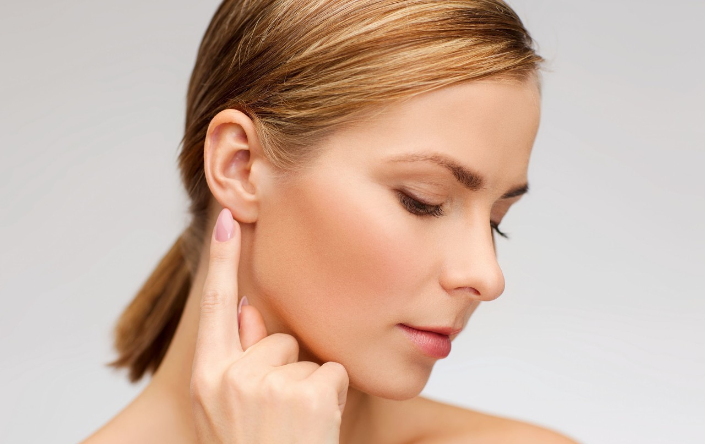

一旦过敏，面部的皮肤尤其明显会发红起粒粒，难受之余还影响美观性。当脸部过敏发红痒的时候，首先要分析是由什么原因而导致的，以后就必须远离过敏原。当过敏的时候，身体会有一种很痒的感觉，但切忌用手去抓皮肤，因为手有细菌会导致越来越严重。目前市面上有针对过敏的修复膏，可以根据个人皮肤进行购买。也可以到药店买抗过敏的药物服用，或者买过敏膏涂于患处，有一定的修复作用。
人体的皮肤在换季的时期特别敏感，会产生脱皮、瘙痒、起红斑等现象。在换季期间，空气中的化学物会容易被皮肤吸收，如果植物中的花粉或者细菌进入到皮肤中，就会出现发红痒的状况。
由于化妆品的种类繁多，而且所含有的物质多样，当化妆品的属性与皮肤不温和，或者使用劣质的化妆品，或者没有正确使用化妆品混合使用等情况，都有可能导致皮肤出现过敏的现象。
随着年龄的增长，皮肤也会有所变化，年轻时期的皮肤特别水嫩光滑是因为皮肤中有一层保护膜用于保持水分，当皮肤老化的时候，敏感的物质就容易侵蚀到皮肤，导致面部过敏。
由于人体的机能不同，所能抵抗的东西也有所不同，有些人会对榴莲过敏，对海鲜过敏，甚至对水果过敏等等，过敏源要因人而异，当发现自己对于食物过敏的时候，以后要避免再次食用。
1、护肤。护肤是很重要的一步，而且护肤是有很多学问的，必须要理清楚步骤和方法。在日常中要保持脸部的清洁，建议用冷水洗脸，这样能增加皮肤的抵抗力。
2、生活规律。生活的规律与皮肤息息相关，在日常中要坚持锻炼，保持正常的饮食，以及保证充足的睡眠状况，会发现皮肤的保护层也会很活跃。
3、维生素。汲取维生素是对于皮肤有很好的帮助作用，可以多吃含有维生素的水果和蔬菜，有必要也可以服用维生素片。
4、生活习惯。过度暴晒经常与植物接触的人群，是很容易导致过敏的，日常中要特别注意做防晒的保护措施，例如带帽子或者弄隔网层工作，避免皮肤受到刺激。
5、化妆品注意。女性在使用化妆品的时候，如何选择错误或者步骤不对，都很容易导致过敏，尽量选择无刺激不含酒精化学成分的化妆品，选择敏感肌肤适用的化妆品更为保障。
6、用不含酒精的爽肤水。爽肤水的作用是给面部清爽及光滑的感觉，但一定要用不含酒精的爽肤水，选择性质温和的，涂抹时用食指、中指及无名指指腹轻弹，千万不要用力拍打，以免刺激。
7、及时洁面保湿。发现过敏马上用冷开水或加上无任何添加剂的洁面乳清洁面部，在还没有完全抹干水分时涂上薄薄的保湿产品，并身处阴凉环境下，能迅速镇静皮肤。
8、多补充维他命C。缺乏维他命C，容易令皮肤粗糙枯干，从而引致皮肤炎、脱皮等敏感症状，在含丰富维他命C的蔬果中，梨与奇异果是首选，多吃可以加强皮肤组织，有助对抗外来敏感。